Data is just a collection of numbers until it is turned into a story. Sometimes, the combination of several plots is required for telling a great data-driven story.
It is a while that I am using R for data analysis and visualization and I have been using several packages for combining multiple plots. During this period, I found the patchwork package the most straightforward way of combining multiple ggplot plots which I will explore it in this post.
gdpPercap_lifeExpt <- gapminder %>%
ggplot(aes(x=gdpPercap, y=lifeExp, col = continent)) +
geom_point() + theme_bw() +
labs(x = NULL, y = NULL)
lifeExpt_densityPlot <- gapminder %>%
ggplot(aes(x=lifeExp, fill=continent)) +
geom_density(alpha=0.4) + theme_bw() +
labs(x = NULL, y = NULL)
lifeExpt_boxPlot <- gapminder %>%
ggplot(aes(x=continent, y=lifeExp, col=continent)) +
geom_boxplot() +
geom_jitter(width=0.2, alpha=0.4) + theme_bw() +
labs(x = NULL, y = NULL)
gdpPercap_densityPlot <- gapminder %>%
ggplot(aes(x = gdpPercap, fill = continent)) +
geom_density(alpha = 0.4) + theme_bw() +
labs(x = NULL, y = NULL)
gdpPercap_boxPlot <- gapminder %>%
ggplot(aes(x=continent, y=gdpPercap, col=continent)) +
geom_boxplot() +
geom_jitter(width=0.2, alpha=0.4) + theme_bw() +
labs(x = NULL, y = NULL)Them most simple and straightforward way to combine plots is
to use the + operator.
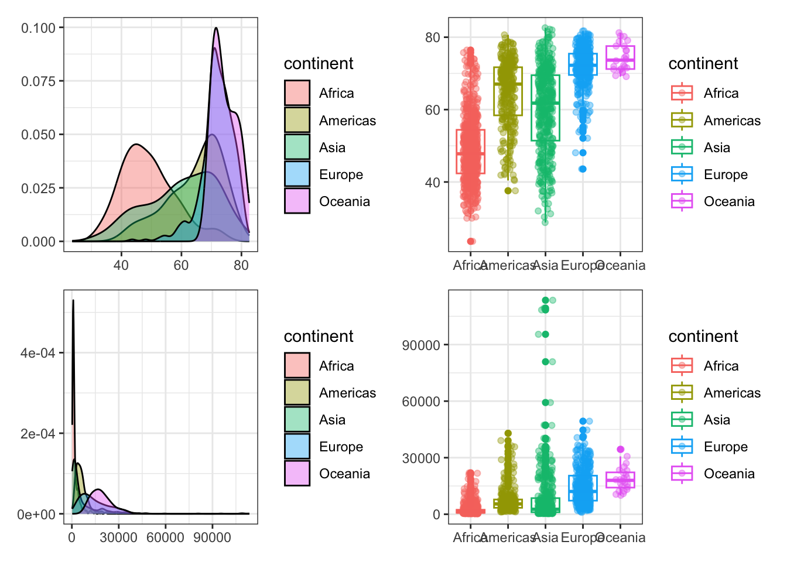
The + operator combines plots without indicating
anything about the desired layout. By default, the
patchwork package keeps the grid square and
fill the grid in row order. This can be controlled by
plot_layout().
lifeExpt_densityPlot + lifeExpt_boxPlot + gdpPercap_densityPlot + gdpPercap_boxPlot +
plot_layout(nrow = 3, byrow = F)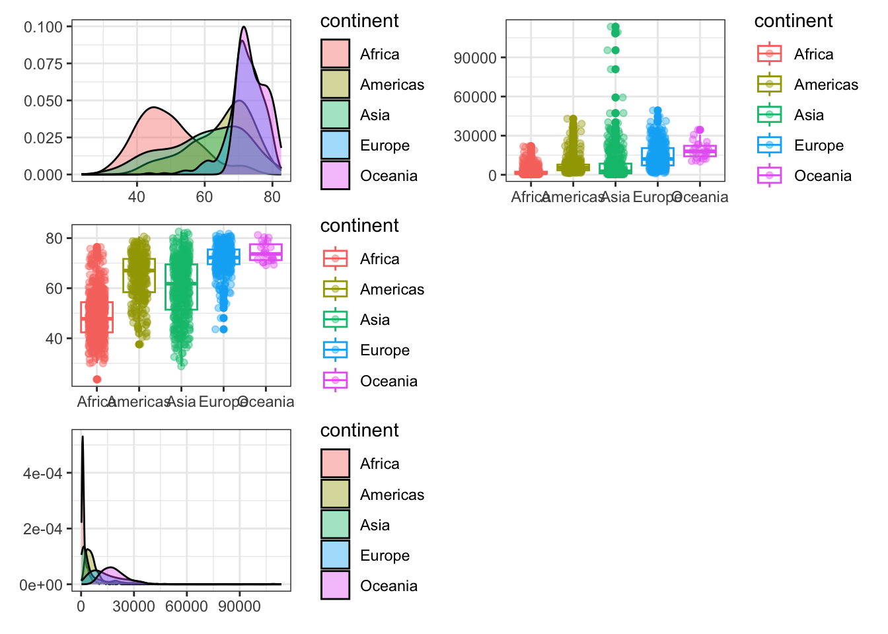
By having a one-row layout
plot_layout(nrow = 1)or one-column layoutplotlayout(ncol = 1), plots can be placed on top of each other or beside each other.
Likewise, patchwork provides two more
operators. | and /
| will place the plots beside each other, while
/ will stack them.
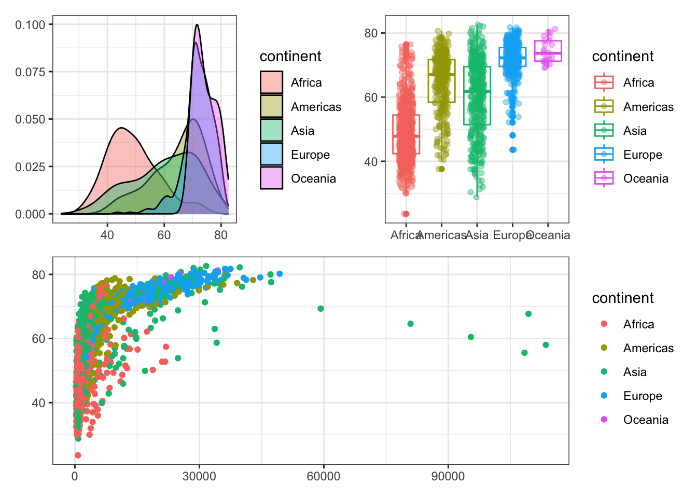
The plotlayout() function can also be used to
place the legends in a common place instead of next to each
plot.
lifeExpt_densityPlot + lifeExpt_boxPlot + gdpPercap_densityPlot + gdpPercap_boxPlot +
plot_layout(nrow = 3, byrow = F, guides = 'collect')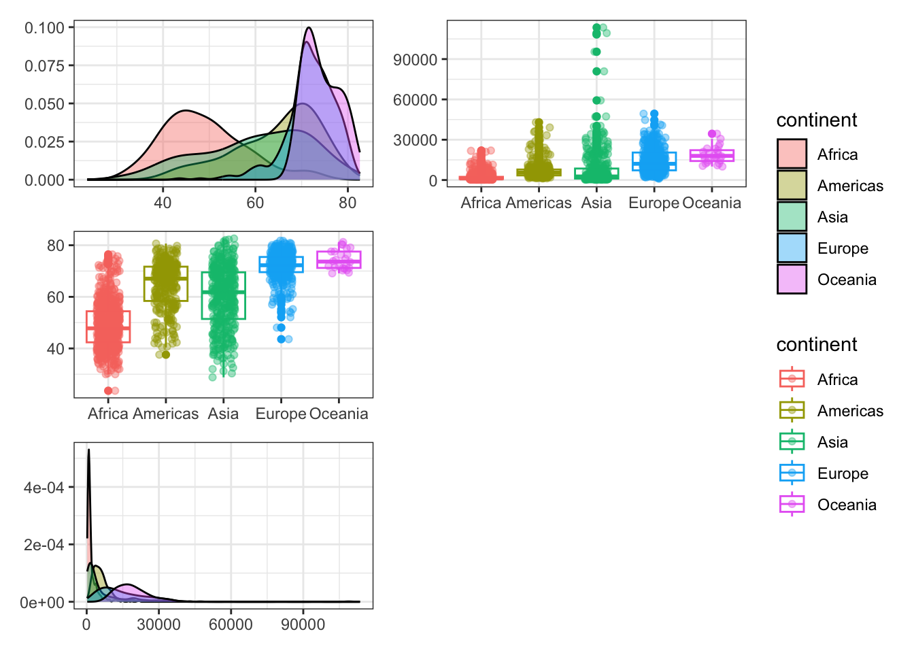
gdpPercap_lifeExpt / ((lifeExpt_densityPlot / lifeExpt_boxPlot) | (gdpPercap_densityPlot / gdpPercap_boxPlot)) +
plot_layout(guides = 'collect')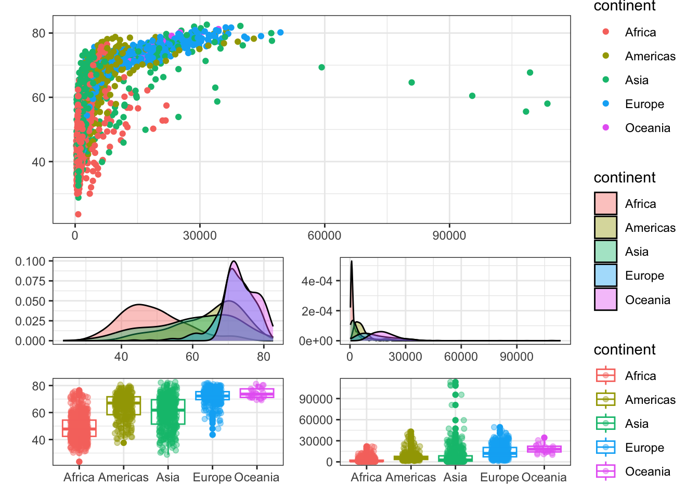
It is also possible to add an empty area between the plots by
creating an empty ggplot object using the
plot_spacer() and adding it to the patchwork.
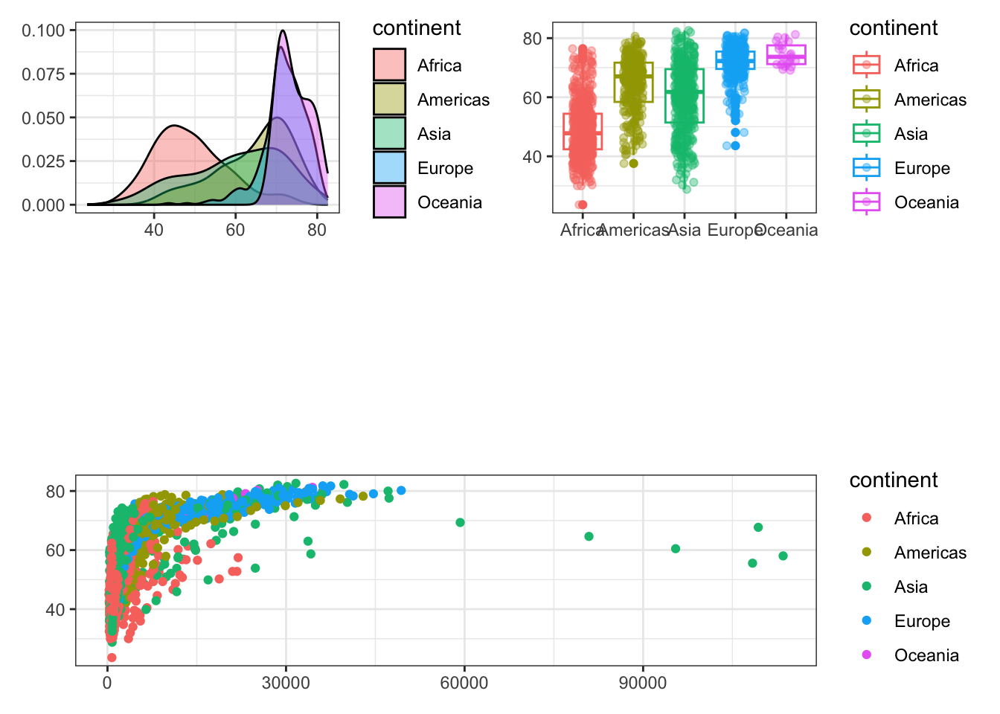
Sometimes you may want to combine a non-ggplot content with a ggplot plot. For instance, let’s combine the correlation table between life expectancy, GDP per capita, and population with the GDP per capita and life expectancy scatter plot.
# install.packages("gridExtra")
library(gridExtra)
correlation <- cor(gapminder[,c(4:6)], method = 'pearson') %>% round(digits = 3)
gdpPercap_lifeExpt / tableGrob(correlation)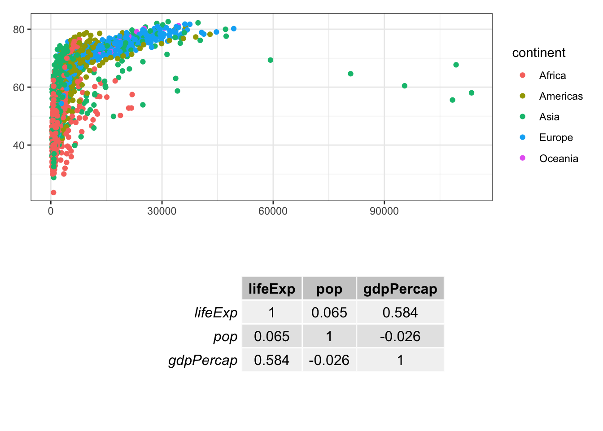
The plot_annotation() function can be used to
control different aspects of the annotation of the final plot
such as title, subtitle, and caption.
(lifeExpt_densityPlot | lifeExpt_boxPlot) / gdpPercap_lifeExpt +
plot_layout(guides = 'collect') +
plot_annotation(title = 'THIS IS TITLE', subtitle = 'this is subtitle')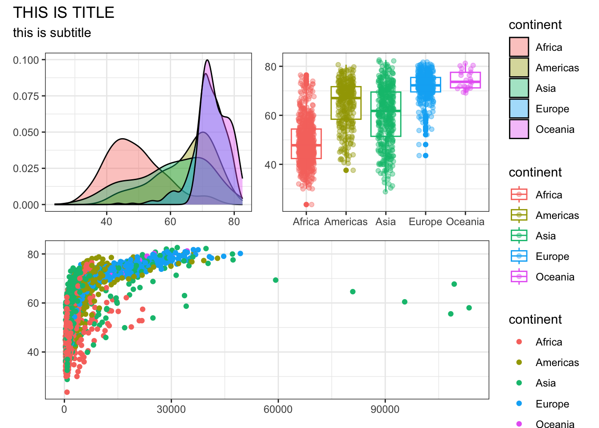
The plot_annotation() function also provide the
tag_levels, tag_prefix, and
tag_suffix arguments for auto-tagging to identify
the subplots in text.
tag_levels = A character vector defining the enumeration format to use at each level. Possible values are ‘a’ for lowercase letters, ‘A’ for uppercase letters, ‘1’ for numbers, ‘i’ for lowercase Roman numerals, and ‘I’ for uppercase Roman numerals.
tag_prefix = String that should appear before the tag.
tag_suffix = String that should appear after the tag.
(lifeExpt_densityPlot | lifeExpt_boxPlot) / gdpPercap_lifeExpt +
plot_layout(guides = 'collect') +
plot_annotation(tag_levels = "I", tag_prefix = "Plot ", tag_suffix = " :")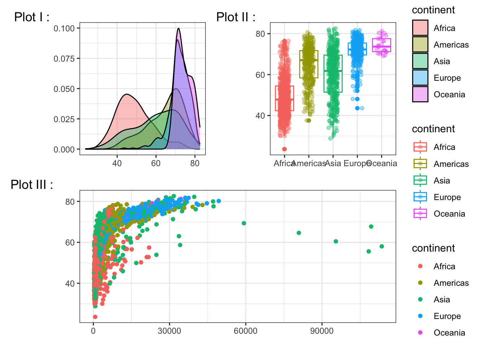
The resulting object of the patchwork is a ggplot object. Which means if you continue adding objects such as geoms, scales, etc. it will be referenced to the last added plot. For example, let’s italicize the x-axis text and set the angle to 45.
(lifeExpt_densityPlot | lifeExpt_boxPlot) / gdpPercap_lifeExpt +
plot_layout(guides = 'collect') +
plot_annotation(tag_levels = "I", tag_prefix = "Plot ", tag_suffix = " :") +
theme(axis.text.x = element_text(angle = -45, face = 'italic'))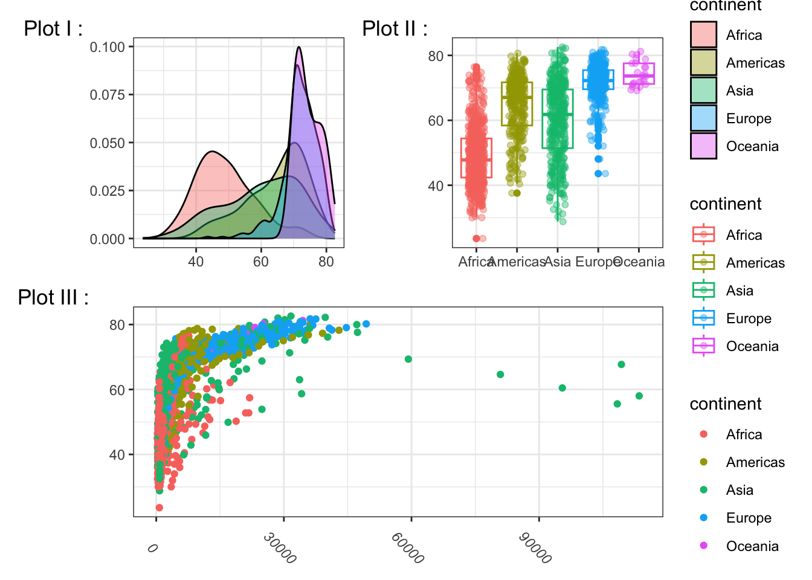
Often when it comes to modifying the plot it is more
reasonable to modify everything at once. To do so, instead of
the + operator, the & operator can
be used.
(lifeExpt_densityPlot | lifeExpt_boxPlot) / gdpPercap_lifeExpt +
plot_layout(guides = 'collect') +
plot_annotation(tag_levels = "I", tag_prefix = "Plot ", tag_suffix = " :") &
theme(axis.text.x = element_text(angle = -45, face = 'italic'))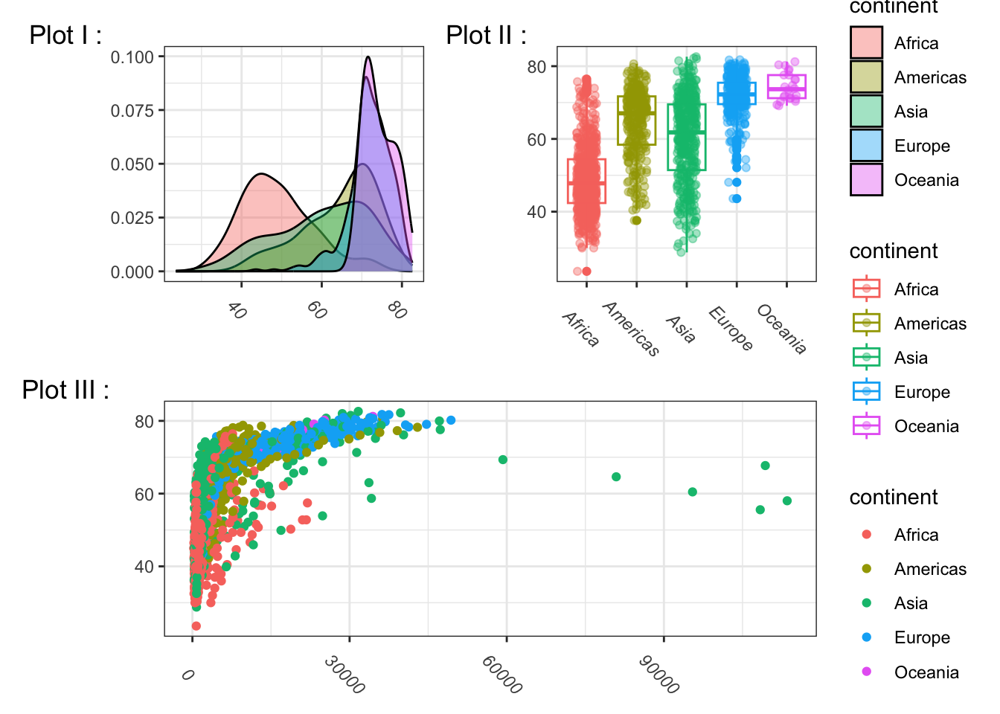